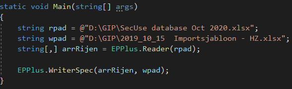

Casestudy 1
Mijn 1ste case studie was om voorwerpen voor de kabel management te verbeteren. De producten die ik heb
gevonden zijn:
| Horizontaal aan rack |


|


|
| Verticaal aan rack |

|
|
| Naar andere ruimtes |

|

|
Casestudy 2
1. Informatie
Dit is mijn 2de case studie waarbij ik filemaker pro en Visual Studio heb gebruikt.
1.1 Filemaker
Filemaker is uitgebracht door Claris.
Webiste
Met Filemaker kan je databases maken.
1.2 Visual studio
Visual Studio is uitgebracht door Microsoft.
Webiste
Met Visual Studio kan je programma’s maken.
1.3 Algemene informatie case
De case was om een Filemaker pro database over te zetten naar een Excel bestand met een voorgemaakte opmaak
van Erfgoedinzicht. Hier voor heb ik eerst de foto’s op een externe map geplaats. Daarna heb ik het bestand
opgeslagen als een Excel bestand. Daarna heb ik een code geschreven om een Excel bestand te schrijven naar
een ander Excel bestand. Voor het programmeren heb ik gebruik gemaakt van de nuget genaamd
EPPlus.
1.4 Foto van database
Dit is een deel van een rij in de Filemaker pro database die afkomstig is van het kaartenmuseum in Turnhout:
1.5 Nuget
Een nuget is een code dat door iemand anders is geschreven waar andere mensen gebruik van kunnen maken.
2. Code
Deel 1 t.e.m. 4 zijn in een aparte klasse gemaakt genaamd EPPlus. Die kan je in de hoofdklasse aan roepen
door de naam van de klasse te typen. Deel 5 is in de hoofdklasse.
2.1 Deel 1: Lezen van een Excel bestand
Het eerste deel van het programmaatje is het lezen van het Excel bestand de code:
2.2 Deel 2: Vragen en laten zien van een rij
Het tweede deel van de code is het vragen welke rij ze willen zien en deze laten zien:
(dit heb ik gebruikt om te zien of dat alles wel juist gelezen wordt)
2.3 Deel 3: Alles schrijven naar een Excel bestand
Het derde deel is om alles over te schrijven naar een ander Excel bestand:

(dit heb ik gebruikt als een tussen stap)
2.4 Deel 4: Geselecteerd schrijven naar een Excelbestand
Het vierde deel is om een bepaalde kolommen over te schrijven deel over te schrijven naar een ander Excel
bestand:
2.5 Deel 5: Toepassen in het hoofdprogramma
En hier kan je deel 5 zien:

Je hebt waarschijnlijk al gezien dat ik niet alle programma codes oproep in mijn hoofdklasse. Dit is omdat ik
die niet heb voor het eindproduct.
Hier onder zie je een deel van het eindproduct: